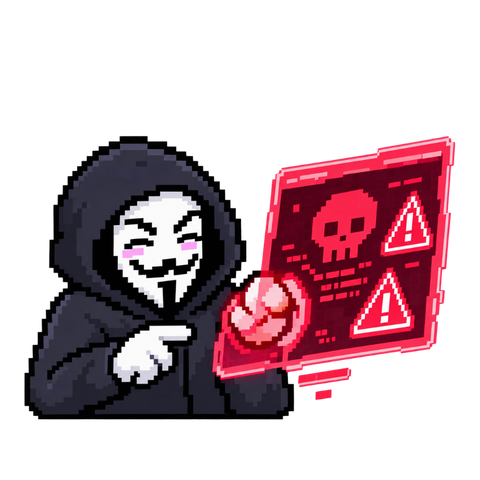
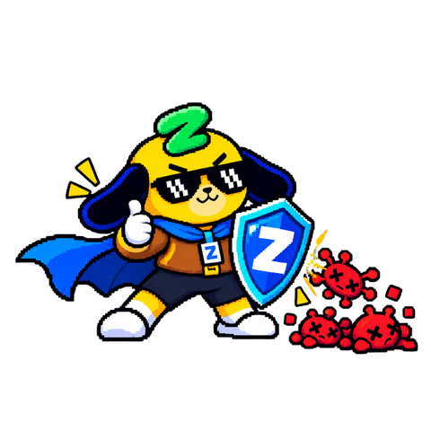
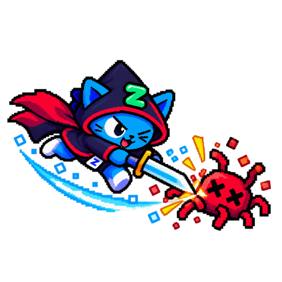

Starter có để ý không? Cứ đến mùa lễ hội cuối năm, từ Black Friday đến Giáng sinh rồi những dịp Lễ, Tết, hộp thư của Starter rất dễ đầy ắp với những nội dung về ưu đãi, khuyến mại; điện thoại thì liên tục báo đơn hàng, thông tin đặt vé, đặt phòng cho những chuyến chơi xa.
Trong những khoảnh khắc đó, mỗi người chúng ta, ai cũng vui một chút, vội một chút và cũng sẽ lơ là một chút.

Kẻ gian
Chỉ cần đặt một cái bẫy nhỏ khi mọi người lơ là cảnh giác là có “kèo thơm” ngay :D
Toro
Kẻ gian không cần chiêu trò mới, chỉ cần nắm được hành vi và tâm lý của Starter để đưa ra “mồi nhử” và đặt bẫy phù hợp. Đó là lý do mùa lễ năm nào cũng là mùa cao điểm của lừa đảo. Bản tin này sẽ đi cùng Starter đi qua những chiêu trò của kẻ gian và trang bị thêm thông tin để Starter phòng thủ trước cái bẫy của chúng.
Bản tin gồm bốn phần, Starter có thể đọc lần lượt hoặc chọn nội dung muốn xem trước:
Ba lý do khiến mùa lễ là thời điểm vàng của kẻ tấn công, và những thực tế đã diễn ra tại Việt Nam.
NGÀY NGHỈ LỄ
Hệ thống bật lên một cảnh báo. Ngày thường, cảnh báo ấy được xử lý trong vài phút. Hôm nay, nó nằm im đến sáng, vì người trực duy nhất đang ngủ, và người có thể gọi thêm thì đang ở quê.
Kẻ tấn công biết chuyện này, vậy nên chúng không chọn ngày một cách ngẫu nhiên.
Khi Starter nghỉ lễ, đội ngũ trực mỏng đi
Kỳ nghỉ dài khiến số người trực giảm hẳn, và điều đó đồng nghĩa với việc sự cố được phát hiện muộn hơn, khắc phục chậm hơn. Cơ quan an ninh mạng CISA và FBI của Mỹ đã nhiều lần cảnh báo rằng các nhóm ransomware, loại mã độc khoá dữ liệu để đòi tiền chuộc, chủ động chọn dịp lễ và cuối tuần để ra tay, đúng lúc khả năng phản ứng của tổ chức yếu nhất.
Một khảo sát năm 2025 với các tổ chức tại 10 quốc gia vẽ nên bức tranh rất rõ.
52%tổ chức từng bị tấn công mã độc tống tiền vào cuối tuần hoặc ngày lễ
78%cắt từ một nửa nhân sự trực an ninh trở lên trong dịp lễ
6%không để lại ai trực an ninh trong suốt kỳ nghỉ
Khi được hỏi vì sao, phần lớn nói để cân bằng công việc và cuộc sống, một số vì doanh nghiệp đóng cửa, và gần một phần ba tin rằng mình sẽ không bị tấn công.
Nói cách khác, kẻ gian tăng ca đúng vào lúc hầu hết chúng ta nghĩ rằng không cần ai trực.
CISA và FBI, cảnh báo chung “Ransomware Awareness for Holidays and Weekends”; Semperis, “2025 Ransomware Holiday Risk Report”, 24/11/2025.
Khi Starter mải chờ hàng, cảnh giác cũng giảm đi
Lý do thứ hai không nằm ở hệ thống, mà nằm ở chính chúng ta. Mùa lễ là lúc Starter vừa chờ hàng, vừa đặt vé, vừa săn sale. Mỗi việc ấy kéo theo một loạt tin nhắn thật, và giữa những tin nhắn thật, một tin nhắn giả trông chẳng khác gì.
G
GiaoNhanh
Tin nhắn · 23:41
Đơn hàng GN8842193 của anh/chị đang tạm giữ do thiếu phụ phí 15.000đ. Vui lòng hoàn tất trong 24h. gnthanhtoan.top/x7k
Mười lăm nghìn đồng. Một con số nhỏ đến mức không đáng để nghi ngờ, gửi đến đúng lúc Starter đang mong một kiện hàng. Tin nhắn này không có một lỗi chính tả nào. Đó là điểm mới của lừa đảo thời nay, Phần 3 sẽ nói rõ.
Khi ranh giới giữa công việc và đời sống mờ đi
Lý do thứ ba âm thầm hơn. Nhiều người mua sắm cá nhân trên laptop công ty, rồi lại mở email công việc trên điện thoại riêng. Hai thế giới dùng chung thiết bị, dùng chung thói quen, và đôi khi dùng chung cả mật khẩu.
1,57 triệutài khoản đăng nhập sàn thương mại điện tử đang được rao bán trên mạng, theo FortiRecon. Nếu mật khẩu của tài khoản mua sắm trùng với mật khẩu công việc, một lần lộ là mất cả hai.
Dẫn chứng thực tế về hậu quả
Theo khảo sát của Hiệp hội An ninh mạng quốc gia (NCA) và Bộ Công an, trong 11 tháng đầu năm 2025, lừa đảo trực tuyến đã gây thiệt hại lên đến 6.000 tỉ đồng. Riêng trên thiết bị di động, năm 2025 ghi nhận 62.952 loại mã độc mới.
6.000 tỉđồng thiệt hại do lừa đảo trực tuyến, 11 tháng đầu năm 2025
62.952loại mã độc mới trên thiết bị di động trong năm 2025
1/555người dùng là nạn nhân năm 2025, giảm từ 1/220 của năm 2024
Có một tin tốt: tỉ lệ người dùng trở thành nạn nhân đã giảm, lần đầu tiên sau nhiều năm: năm 2025, cứ 555 người dùng thì có 1 nạn nhân; năm 2024 con số này là 1 trên 220. Nhưng tin tốt này đi kèm một dấu hỏi, vì chỉ khoảng 32% nạn nhân trình báo cơ quan chức năng. Con số thực tế còn cao hơn những gì được ghi nhận.
Cũng theo khảo sát này, năm hình thức lừa đảo phổ biến nhất năm 2025 lần lượt là:
Mạo danh công an, cơ quan nhà nước
Thông báo trúng thưởng, nhận quà tặng TĂNG MẠNH MÙA LỄ
Mời gọi đầu tư lợi nhuận cao
Giả danh shipper, nhân viên giao hàng TĂNG MẠNH MÙA LỄ
Kết bạn, làm quen rồi dẫn dụ
Trúng thưởng và giả danh shipper xuất hiện quanh năm nhưng tăng vọt vào mùa mua sắm cuối năm. NCA chỉ công bố thứ hạng, chưa công bố tỉ lệ từng hình thức.
NCA và Bộ Công an, Báo cáo nghiên cứu, khảo sát an ninh mạng 2025, khu vực người dùng cá nhân, 07/01/2026, nca.org.vn.
Dù nghỉ lễ, nhưng việc bảo vệ tài khoản thì không nghỉ. Và việc ấy bắt đầu từ trước khi Starter rời văn phòng.
TIẾP THEO · PHẦN 2
Ba việc cần làm ở công ty trước khi nghỉ lễ
PHẦN 2
Ba việc cần làm ở công ty trước khi nghỉ lễ
Nhận ra yêu cầu gấp giả danh, bàn giao mà không đưa mật khẩu, và chuẩn bị thiết bị trước khi rời văn phòng.
NGÀY LÀM VIỆC CUỐI TRƯỚC KỲ NGHỈ
Chiều ngày làm việc cuối, Starter đang xử lý nốt vài việc, đầu đã nghĩ đến chuyến đi đang chờ mình phía trước. Điện thoại rung lên, Starter thấy tin nhắn từ một số lạ, nhưng hiện lên với một cái tên quen thuộc.
T
Chị Thủy, Chief Accountant
+84 9•• ••• 417 · 17:02
SỐ LẠ
Chị đang họp với đối tác nên không nghe điện thoại được. Em chuyển gấp khoản thanh toán cho nhà cung cấp theo số tài khoản mới này trước khi ngân hàng đóng cửa.
Đừng gọi chị nhé.
Việc 1: Nhận ra công thức của một yêu cầu gấp giả danh
Tin nhắn trên có đủ ba dấu hiệu của một yêu cầu gấp mạo danh:
1 · QUYỀN LỰC
Người nhắn là cấp trên hoặc một nhà cung cấp quen thuộc.
2 · SỰ GẤP GÁP
“Trước khi hết giờ làm”, “trước kỳ nghỉ”, “khách đang đợi”.
3 · YÊU CẦU CHẶN XÁC MINH
“Chị đang họp”, “chị đang bay”, “đừng gọi”, “đừng nói với ai”.
Lời dặn “đừng gọi chị” chính là dấu hiệu đáng ngờ nhất. Một người sếp thật không bao giờ yêu cầu Starter im lặng.
Khi gặp tình huống như vậy, Starter chỉ cần nhớ ba bước:
DỪNG LẠI
Sự gấp gáp là công cụ để thao túng, không phải tình huống thật.
XÁC MINH
Gọi lại qua số nội bộ trong danh bạ, thay vì số trong tin nhắn.
BÁO CÁO
Dù đã chặn được hay chưa, hãy báo ngay với bộ phận Security. Ở Phần 4 Toro sẽ chia sẻ kỹ hơn về điều này.
Việc 2: Bàn giao bằng uỷ quyền, không bằng mật khẩu
Yêu cầu gấp giả danh nguy hiểm nhất khi người nhận tin là người trực thay, chưa nắm hết việc và không dám hỏi lại. Vì vậy, một cuộc bàn giao kỹ càng cũng là một lớp phòng thủ.
Nguyên tắc chỉ có một: uỷ quyền qua hệ thống, không đưa mật khẩu. Cụ thể, Starter nên làm và nên tránh những việc sau:
HÃY LÀM
Dùng cơ chế uỷ quyền chính thức của hệ thống
Xin cấp quyền tạm thời đúng quy trình, thu hồi khi quay lại
Bàn giao bằng văn bản: việc đang dở, đầu mối, ngưỡng phê duyệt
Kiểm tra lại quyền truy cập trong ngày đầu đi làm lại
Thông báo vắng mặt ngắn gọn, chỉ nêu đầu mối thay thế
ĐỪNG LÀM
Chia sẻ mật khẩu cho đồng nghiệp trực thay
Nhờ người khác dùng chung tài khoản của mình
Để nguyên quyền truy cập tạm sau khi quay lại
Viết thông báo vắng mặt quá chi tiết: đi đâu, bao lâu, ai thay phê duyệt
Chuyển file công việc sang email hoặc ổ lưu trữ cá nhân
Một thông báo nêu rõ Starter đi đâu, đi bao lâu và ai thay phê duyệt chẳng khác nào tấm bản đồ dành cho kẻ tấn công. Chúng biết chính xác nên giả danh ai, nhắm vào ai, và trong khoảng thời gian nào. Hãy viết ngắn thôi, chỉ cần nêu đầu mối thay thế.
Việc 3: Khoá máy và lưu kênh báo sự cố trước khi rời văn phòng
Ở sân bay, khách sạn hay quán đông người, một chiếc laptop có thể biến mất trong vài giây. Dưới đây là 5 việc Starter cần chuẩn bị từ văn phòng và giữ suốt chuyến đi:
ĐÃ CHUẨN BỊ 0/5

Việc đã sắp xếp xong, thiết bị cũng đã sẵn sàng. Starter bắt đầu hoà mình vào kỳ nghỉ lễ, và đây cũng là lúc kẻ gian đưa ra nhiều mồi nhử hấp dẫn hơn.
TIẾP THEO · PHẦN 3
Năm mồi nhử đặc trưng trong kỳ nghỉ lễ
PHẦN 3
Năm mồi nhử đặc trưng trong kỳ nghỉ lễ
Phần này đi qua: vì sao lừa đảo nay khó nhận ra hơn, ba câu hỏi nên tự đặt trước mọi tin nhắn, năm mồi nhử quen mặt, và hai cửa cuối: mã QR và mã OTP.

Phần lớn những chiêu trong phần này không mới. Kẻ gian chỉ khoác cho chúng bối cảnh mùa lễ để dễ lừa hơn. Nhưng có một điều đã thay đổi: kẻ gian đã có AI, và lời khuyên kiểu “soi lỗi chính tả” không còn đúng nữa.
Trước hết: vì sao mồi nhử ngày nay khó nhận ra hơn?
Trước đây, Starter có thể nhận ra tin lừa đảo bằng mắt thường. Sai chính tả, dịch máy ngô nghê, logo mờ, lời chào chung chung kiểu “Kính gửi quý khách”. Những dấu hiệu ấy từng rất đáng tin, và nay không còn nữa.
Kẻ tấn công đã có AI. Chúng viết tiếng Việt lẫn tiếng Anh trôi chảy, đúng văn phong công ty. Chúng sao chép trang đăng nhập gần như hoàn hảo. Chúng cá nhân hoá tin nhắn theo những gì Starter đăng công khai. Và chúng giả được cả giọng nói qua điện thoại, thứ mà người ta gọi là deepfake.
Hãy nhìn lại tin nhắn GiaoNhanh ở Phần 1:
G
GiaoNhanh
Tin nhắn · 23:41
NHẮC LẠI TỪ PHẦN 1
Đơn hàng GN8842193 của anh/chị đang tạm giữ do thiếu phụ phí 15.000đ. Vui lòng hoàn tất trong 24h. gnthanhtoan.top/x7k
Câu chữ chuẩn, giọng điệu đúng kiểu một đơn vị vận chuyển, không một lỗi chính tả. Và vẫn là lừa đảo.
Vậy thay vì soi lỗi chính tả, Starter cần một bộ lọc khác. Hãy thử áp dụng ba câu hỏi dưới đây nhé:
Công cụ chung: ba câu hỏi trước mọi tin nhắn
Dù tin đến qua SMS, email, Zalo hay một cuộc gọi, Starter chỉ cần tự hỏi ba câu.
CÂU 1Tôi có đang chờ tin này không?
CÂU 2Nội dung muốn tôi làm gì?
Bấm link, đăng nhập, chuyển tiền, hay đọc một mã?
CÂU 3Nó có ép tôi phải làm ngay không?
Nếu câu đầu là “không” và câu cuối là “có”, gần như chắc chắn đó là lừa đảo. Còn câu 2 cho biết kẻ gian đang nhắm vào thứ gì: link, mật khẩu, tiền hay mã OTP. Đó chính là thứ Starter tuyệt đối không đưa.
Tham khảo ngay 5 mồi nhử đặc trưng của kẻ lừa đảo để biết đường tránh bẫy:
Năm mồi nhử: giao hàng, thưởng, lì xì, flash sale, từ thiện
Chạm vào từng mồi nhử để xem cách xử lý nhé!
1Giao hàngCHẠM ĐỂ XEMGiaoNhanhSMS · 23:41Kiện hàng GN8842193 của bạn đang bị giữ, vui lòng đóng 15.000đ phí để nhận hàng. gnthanhtoan.top/x7k
Toro
Đừng bấm link. Hãy tự tra mã vận đơn trên ứng dụng chính thức.
2Thưởng TếtCHẠM ĐỂ XEMPhòng Nhân sựEmail · 09:12Thông báo thưởng Tết 2026. Vui lòng đăng nhập để xem chi tiết mức thưởng của bạn. hrportallogin.vn
Toro
Lương thưởng chỉ đến từ kênh nội bộ, không bao giờ qua một link lạ. Đây là mồi nhử rất hiệu quả trong môi trường doanh nghiệp, vì ai cũng đang mong tin này.
3Lì xì onlineCHẠM ĐỂ XEMNhóm Lớp 12A3Zalo · 00:05Chúc mừng năm mới cả nhà! Nhận lì xì đầu năm, quét mã này nha [mã QR]
Toro
Không đăng nhập qua link hoặc mã QR nhận từ chat, dù người gửi là bạn bè.
4Flash sale và voucherCHẠM ĐỂ XEMSALE TẾT 70%Quảng cáo · 20:30Flash sale giảm 70%, hoàn tiền lên đến 50% khi thanh toán trước, hoàn tiền sau, chốt đơn ngay: shopee-tet.vn
Toro
Giảm sâu, ép chuyển khoản trong vài giờ, tên miền lạ: ba dấu hiệu này đi cùng nhau thì đó là bẫy.
5Từ thiệnCHẠM ĐỂ XEMQuỹ Ấm Áp Mùa ĐôngFacebook · 18:47Ủng hộ cho các em vùng cao, chiến dịch kết thúc hôm nay. Chuyển về STK cá nhân bên dưới. STK 0123 456 789
Toro
Lòng tốt rất quý, nhưng hãy xác minh tổ chức qua kênh chính thức trước khi chuyển tiền.
ĐÃ XEM 0/5
Dù mồi nhử là gì, điểm đến cuối cùng thường là một trong hai cánh cửa: mã QR hoặc mã OTP. Kẻ gian đứng chờ ở đó.
Cánh cửa kẻ gian đứng chờ Starter: mã QR và mã OTP
Trong ba tháng trước mùa lễ 2025, hàng chục nghìn tên miền mới được đăng ký với chủ đề lễ hội và mua sắm. Cứ 100 tên miền chủ đề lễ hội thì khoảng 4 tên bị xác nhận độc hại, còn với chủ đề mua sắm, con số lên tới khoảng 15. Đây là vấn đề toàn cầu: riêng FBI (Mỹ) đã nhận 191.561 khiếu nại về lừa đảo và giả mạo trong năm 2025.
4%tên miền mới chủ đề lễ hội là độc hại (750 trên hơn 18.000)
15%tên miền mới chủ đề mua sắm là độc hại (2.900 trên hơn 19.000)
191.561khiếu nại lừa đảo và giả mạo gửi FBI trong năm 2025
Cách an toàn nhất đơn giản đến bất ngờ: vào thẳng ứng dụng hoặc website Starter đã từng dùng, thay vì đi qua link trong tin nhắn.
Mã QR không cho Starter biết nó dẫn đi đâu, và kẻ gian khai thác điểm yếu ấy theo hai cách. Ở quầy thanh toán, chúng dán mã giả đè lên mã thật, và tiền chuyển thẳng vào tài khoản của chúng. Trong nhóm chat, chúng gửi mã núp bóng lì xì, dẫn Starter tới trang đăng nhập giả. Trên thực tế, có người mất tài khoản Zalo theo đúng cách này.
Vì vậy, trước khi quét, hãy nhìn xem mã có bị dán đè hoặc chỉnh sửa không. Sau khi quét và trước khi xác nhận, kiểm tra thêm hai điều:
Mã OTP: quy tắc chỉ có một dòng
Ngân hàng
Ví điện tử
Sàn thương mại điện tử
Nhân viên hỗ trợ
Đồng nghiệp
Cấp trên
Không ai trong số này được hỏi mã OTP của Starter.
AI HỎI, NGƯỜI ĐÓ ĐANG LỪA.
Mồi nhử trên đường đi: đặt phòng, wifi và người ngồi cạnh
Rủi ro của một chuyến đi bắt đầu từ lúc đặt phòng. Mùa lễ có ba chiêu quen mặt. Một là fanpage, website giả khách sạn, homestay: đăng giá rẻ, nhận cọc rồi chặn liên lạc. Hai là những gói tour “nhượng lại” giá rẻ bất thường, hoá đơn và đánh giá đều giả: bên bán giao suôn sẻ vài đơn nhỏ để tạo lòng tin, đến đơn lớn thì biến mất. Ba là email xác nhận đặt phòng giả, kèm link hoặc tệp đính kèm cài mã độc để chiếm quyền thiết bị và lấy thông tin ngân hàng.
Có ba dấu hiệu để dừng lại:
DẤU HIỆU 1
Giá rẻ khác thường so với mặt bằng chung.
DẤU HIỆU 2
Bị ép đặt cọc ngay, “chỉ giữ chỗ 30 phút”.
DẤU HIỆU 3
Tài khoản nhận tiền là tài khoản cá nhân, không phải tài khoản doanh nghiệp.
Chỉ cần một trong ba xuất hiện, hãy xác minh trước khi chuyển tiền, hoặc đơn giản là đặt chỗ khác.
Bộ Công an, Cảnh báo thủ đoạn lừa đảo trực tuyến lợi dụng dịp Tết Nguyên Đán và các lễ hội đầu năm.
Hai mạng wifi và một cái bẫy
Đến sân bay, Starter mở danh sách wifi và thấy hai mạng tên gần giống nhau, ví dụ “Airport Free WiFi” và “Airport_Free_WiFi”. Một trong hai là bẫy. Starter chọn mạng nào? Câu trả lời an toàn nhất: không mạng nào cả.
CHỌN MẠNG WIFI
Không thể biết chắc. Và đó chính là vấn đề: ai cũng đặt được một cái tên như vậy.
Nếu cần làm việc, hãy phát wifi từ điện thoại của chính mình và bật VPN công ty (đường kết nối riêng, đã mã hoá, về hệ thống nội bộ). Không có VPN thì gác việc lại, đi chơi đã.
Và trên máy bay, trong quán cà phê hay ở sảnh khách sạn, người ngồi cạnh có thể nhìn thấy màn hình và nghe được cuộc gọi của Starter. Tấm chống nhìn trộm dán sẵn từ trước khi đi là để dùng lúc này. Còn việc nội bộ thì để dành về văn phòng bàn tiếp.
Dù cẩn thận đến đâu, vẫn có lúc lỡ tay. Phần cuối nói về việc cần làm ngay lúc đó, vì vài phút đầu tiên quyết định cứu được bao nhiêu.
TIẾP THEO · PHẦN 4
Xử lý tình huống cấp bách khi Starter sập bẫy kẻ gian
PHẦN 4
Xử lý tình huống cấp bách khi Starter sập bẫy kẻ gian
Báo càng sớm, cứu càng nhiều. Và vì sao im lặng mới là thứ gây thiệt hại.
VỪA XONG
Vừa bấm vào link. Vừa nhập mật khẩu. Hoặc vừa chuyển xong một khoản tiền, rồi chợt nhận ra có gì đó không đúng. Cảm giác đầu tiên thường là lo lắng, và phản xạ đầu tiên thường là im lặng.
Đó chính là phản xạ kẻ gian trông đợi.
Báo trong vài phút thì còn cứu được gần hết
Starter có nhớ con số ở Phần 1 không? Chỉ khoảng 32% nạn nhân lừa đảo trực tuyến tại Việt Nam trình báo cơ quan chức năng, 12% chấp nhận mất tiền và không làm gì. Phần còn lại chỉ kể cho người thân, bạn bè, nên vụ việc không bao giờ đến được nơi có thể xử lý. Trong khi đó, thời gian là thứ quyết định mức thiệt hại.
TRONG VÀI PHÚT
Hầu hết đều còn chặn được: khoá tài khoản, chặn giao dịch, đăng xuất mọi phiên đang mở.
SAU VÀI GIỜ
Thiệt hại đã lan rộng và việc khắc phục tốn kém hơn nhiều.
SAU VÀI NGÀY
Thường đã muộn. Tiền đã bị rút và dữ liệu đã bị mang đi.
Nếu lỡ bấm link, nhập mật khẩu hay chuyển tiền, hãy gọi ngay hotline ngân hàng hoặc ví để khoá giao dịch, rồi trình báo cơ quan chức năng.
Nếu liên quan đến tài khoản hoặc thiết bị công ty, hãy báo ngay cho bộ phận Security. Starter sẽ không bị khiển trách vì đã báo cáo. Thứ khiến thiệt hại lớn lên là sự im lặng.